News
| Oct 2024 |
Our work, "The Recollection of Your Most Cherished Experiences utilizing AI and Neural Signals" will be presented at the Tech to Art (TAP) International Conference Prequel Exhibition, the ART DIFFUSION. |
| Oct 2024 |
Our team won the GRAND prize 🏅 at the AI & Art Hackathon. |
| Oct 2024 |
Started working as an AI research advisor at Planningo via AI research Partnership. |
| Sep 2024 |
Selected to participate in the AI x Art Hackathon hosted by the AI Art Research Center in Seoul, Korea. |
| Aug 2024 |
Invited for a talk on the brain decoding project at Seoul National University. |
| Dec 2023 |
Our AesFA paper got accepted to AAAI 2024. |
| Aug 2023 |
I received M.S. at Seoul National University. I will continue doing research at ConnectomeLab. |
Oct 2024
Our work, "The Recollection of Your Most Cherished Experiences utilizing AI and Neural Signals" will be presented at the Tech to Art (TAP) International Conference Prequel Exhibition, the ART DIFFUSION.
Oct 2024
Our team won the GRAND prize 🏅 at the AI & Art Hackathon.
Oct 2024
Started working as an AI research advisor at Planningo via AI research Partnership.
Sep 2024
Selected to participate in the AI x Art Hackathon hosted by the AI Art Research Center in Seoul, Korea.
Aug 2024
Invited for a talk on the brain decoding project at Seoul National University.
Aug 2023
I received M.S. at Seoul National University. I will continue doing research at ConnectomeLab.
Research In Progress
|
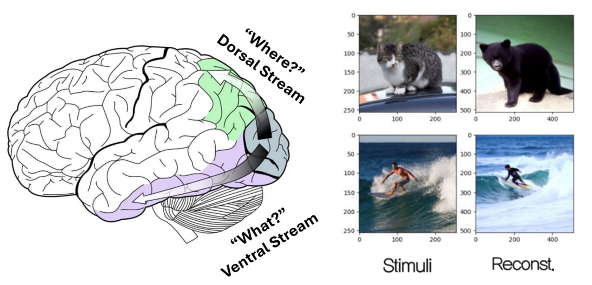
|
Visual Attention Guidance Enables A Composable Brain-To-Image Decoding
Sooyoung Kim*, Joonwoo Kwon*, Mincheol Park*, Jeongwoo Seo, Won Woo Ro, Shinjae Yoo, Suhyun Kim, Yuewei Lin, Jiook Cha
We have developed a new brain-to-image decoding model that allows composable prompt modulation using brain signals for the first time. According to the two-streams hypothesis, we correlate ventral and dorsal pathway in the brain to ‘what’ and ‘where’ information in images different from previous research to reconstruct what people see from functional MRI. We propose a unified brain encoding module for two visual pathways and a new framework that guides the model to the location and identity of objects from the brain based on diffusion models. Our brain-induced attention guidance directly modifies cross-attention layers of LDM at inference without further fine-tuning.
|
|
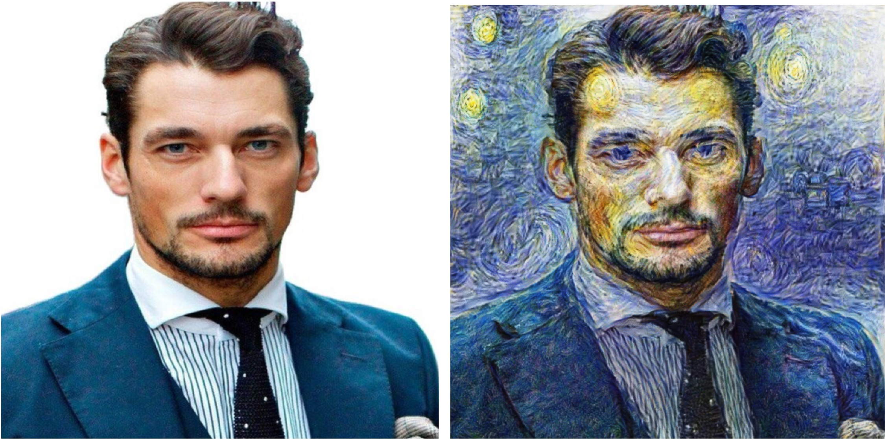
|
AesPHA: An Aesthetic PHysics-Aware Neural Style Transfer
Joonwoo Kwon*, Sooyoung Kim*, Heehwan Wang*, Jinwoo Yi*, Shinjae Yoo, Yuewei Lin, Jiook Cha
Developed a unique neural style transfer method that effectively captures the style information from the pre-trained fluid-simulation field, utilizing a new style encoding approach that harnesses the chaotic characteristics of the Lorenz system.
|
|
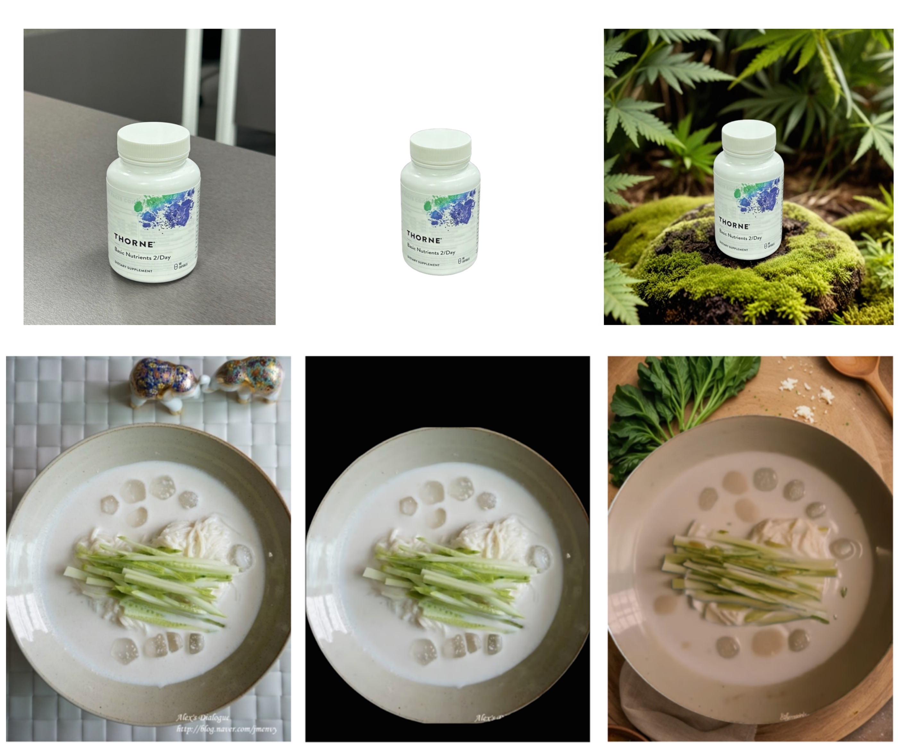
|
Advancing Photio: An AI-based service for product photography
Planningo: Transform the landscape of advertising photography and commercial videography
I am expected to serve as an AI researcher and consultant starting Oct. 2024, with an AI research partnership with Seoul AI Hub. I aim to advance an AI-based service Photio by resolving the incongruity between AI-generated backgrounds and original commercial products.
/* We develop AI technologies that generate background images or videos corresponding to products. We consider the illumination and position of products for authentic outcomes. Furthermore, to advertise efficiently as an alternative to traditional promotional photography, we should provide various styles of backgrounds with short inference time. Our techniques are applicable in various domains such as advertising, art, film, and social media. */
|
Publications
|
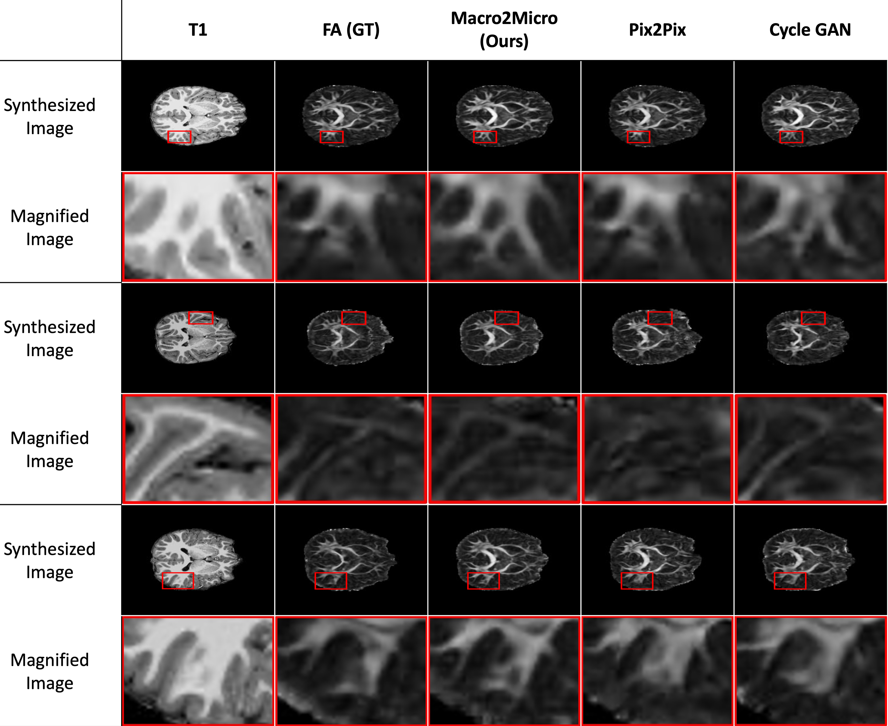
|
A Rapid and Precise Cross-modal Magnetic Resonance Imaging Synthesis using Multi-scale Structural Brain Similarity
Sooyoung Kim*, Joonwoo Kwon*, Junbeom Kwon, Sangyoon Bae, Yuewei Lin, Shinjae Yoo, Jiook Cha
Preprint, 2024
|
|
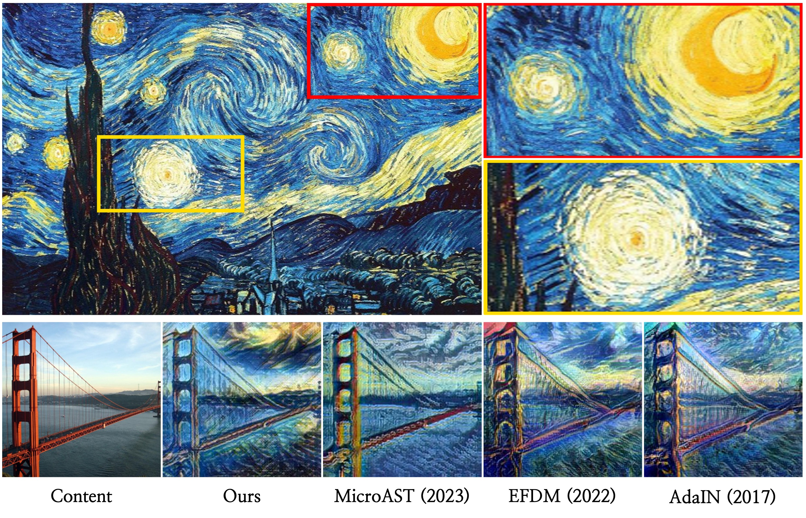
|
AesFA: An Aesthetic Feature-Aware Arbitrary Neural Style Transfer
Joonwoo Kwon*, Sooyoung Kim*, Shinjae Yoo, Yuewei Lin, Jiook Cha
AAAI, 2024 (23.75% acceptance rate)
ArXiv
/
Project page
/
Code
|
|
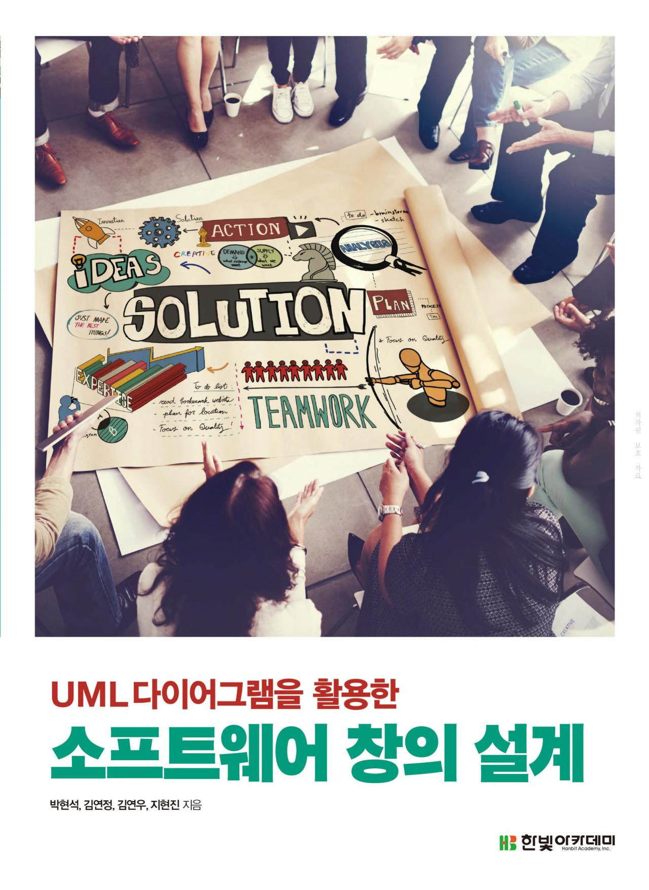
|
Designing Software Creation: Using UML Diagrams
Published textbook, 2023
Book
|
Projects
|
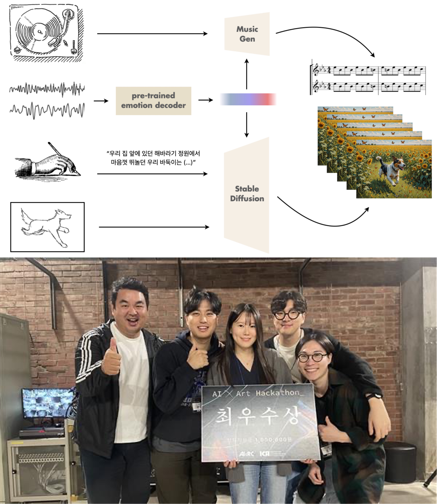
|
The Recollection of Your Most Cherished Experiences utilizing AI and Neural Signals
The Grand Prize 🏅 at AI & Art Hackathon, AI Art Research Center, SNU
Sooyoung Kim, Joonwoo Kwon, Heehwan Wang, Jinwoo Yi
Presentation Slide
We designed an AI framework that generates video with music from memory. We aimed to materialize cherished memories via the video. The inputs of the model were electroencephalogram (EEG) signals, text prompts, and sketches from users who were recalling the memory while listening to the music. We processed the EEG signals by using our pre-trained emotion decoder to obtain how the users felt about the memories. Then, according to how emotions changed over time, we manipulated the music by using Music Gen. We also analyzed the proportion of good and negative emotions, subsequently creating emotion text prompts that were integrated into the input text to guide emotions to the model. We utilized Stable Diffusion to create videos accompanied by music that evoke emotions tied to the users' memories. We ultimately secured the Grand prize!
|
|
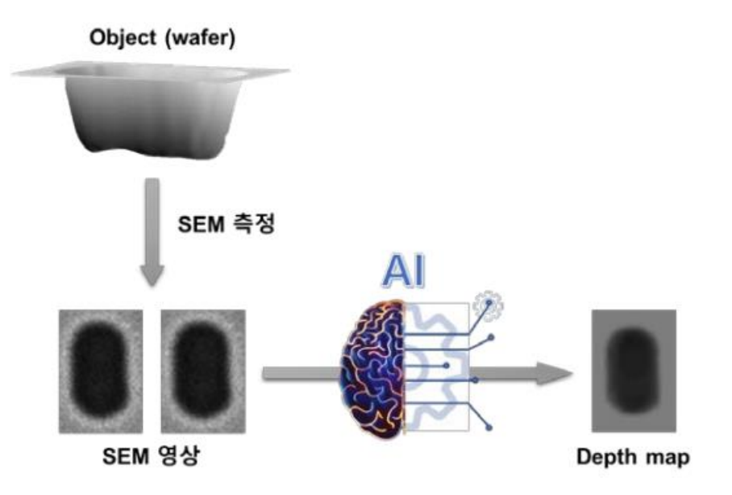
|
Samsung Advanced Institute of Technology Research Capstone
Sooyoung Kim, Joonwoo Kwon
Project slide / Code
We developed an Image-to-Image Translation model that synthesizes 3D depth maps from 2D Scanning Electron Microscope (SEM) images to ensure that semiconductors are produced as intended.
|
|
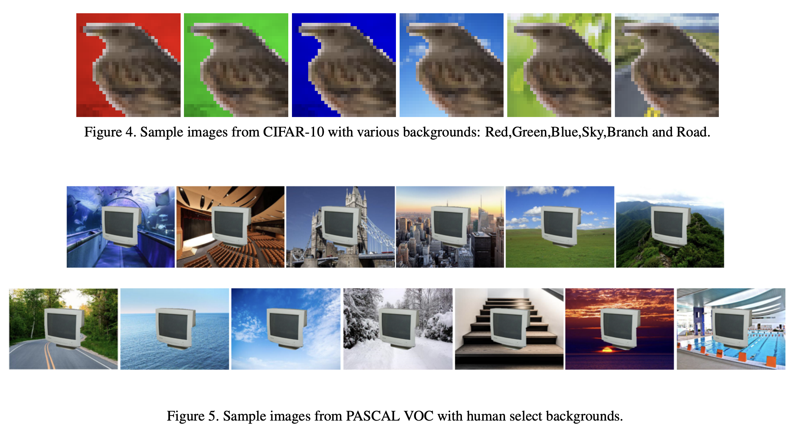
|
Mitigating Unwanted Background Biases with Background Data Augmentation
Jaeheyoung Jeon, Sooyoung Kim, Jaehwan Lim
Paper / Code
We conducted background augmentation techniques using various backgrounds (RGB, black, mean, and human-selected) during training to reduce biases in image classification and object detection.
|
|
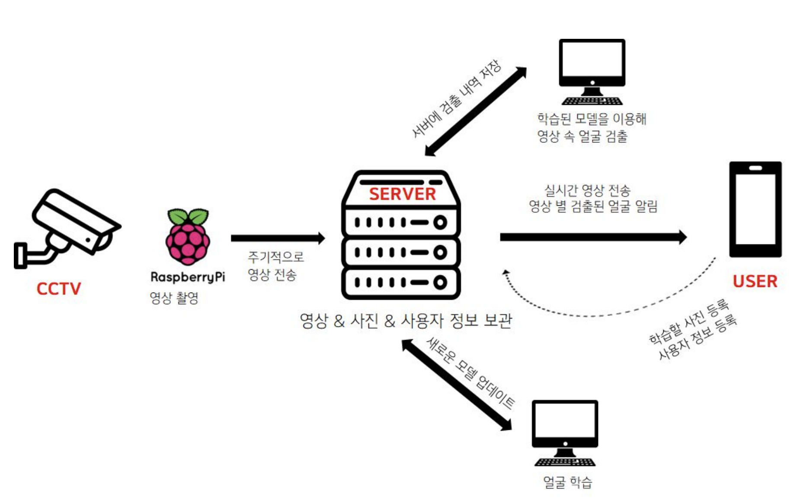
|
A Real-Time Face Detecting AI Surveillance Camera
Sooyoung Kim, Heajin Lee, Suyeon Kim
Presentation slide / Code1 / Code2 / Poster / Video
We developed a smartphone application that identifies the faces of individuals in front of a household and notifies users of the presence of unknown persons in real-time via a camera affixed to the door.
|
Honors & Awards
Grand Prize at AI x Art Hackathon, Oct 2024
BrainKorea21 Four Scholarship, 2021–2022
2020 4th Seoul Innovation Challenge, Jan 2020 – Sep 2020
The 9th Business Plan Contest, Mar 2019 – Dec 2019
EWHA Scholarship, 2018-2020
EWHA Admissions Scholarship (full tuition for a year) - Awarded to the top 10% of students, 2017
About Myself
|
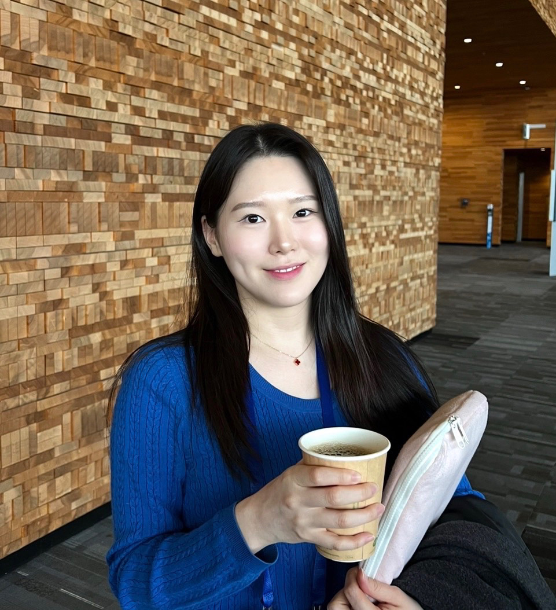
|
I like swimming a lot, as my first name "수영; Sooyoung" sounds the same as "swimming" in Korean.
I also love movies and dramas with dynamic stories, especially I am a big fan of Brooklyn Nine-Nine, an American comedy series about detectives who police the NYPD's 99th Precinct. The most intriguing thing is to hear how people perceive stories that are open to various interpretations.
|
Last updated on October 2, 2024
Referred to template taken from here.
|
|
{kind=link}